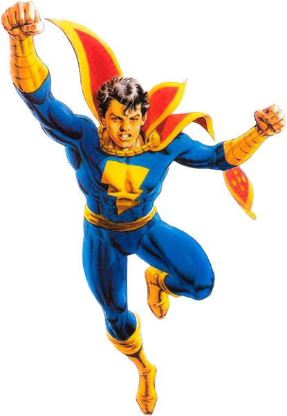

Informações do Capitão Marvel Jr
Voltar
Equipes DC

Criação do Capitão Marvel Jr.
Capitão Marvel Jr., também conhecido como CM3, é um personagem dos quadrinhos da DC Comics.
Ele foi criado por Ed Herron e Mac Raboy, fazendo sua primeira
aparição em Whiz Comics #25, lançado em 1941.
O Personagem Capitão Marvel Jr.
Capitão Marvel Jr. é o alter ego de Freddy Freeman, um jovem que recebe poderes
sobre-humanos após ser salvo por Capitão Marvel durante um confronto
com o vilão Capitão Nazista. Freddy, então, se torna o aliado
e companheiro do Capitão Marvel, lutando ao seu lado contra o crime.
Freddy Freeman pode se transformar em Capitão Marvel Jr. ao dizer a palavra mágica
"Captain Marvel". Assim
como o Capitão Marvel, Freddy ganha uma série de habilidades sobre-humanas que o tornam um poderoso
super-herói.
Quadrinhos Importantes do Capitão Marvel Jr.
Capitão Marvel Jr. teve várias histórias importantes nos quadrinhos, explorando seu papel como aliado e
parceiro do Capitão Marvel. Aqui estão alguns dos quadrinhos mais relevantes do personagem:
"The Marvel Family" (1945):
Escrito por Otto Binder e ilustrado por Marc Swayze, esta história apresenta o Capitão Marvel Jr. ao lado do
Capitão Marvel e Mary Marvel, formando a família de super-heróis conhecida como Marvel Family.
"Shazam!: The New Beginning" (1987):
Escrito por Roy Thomas e ilustrado por Tom Mandrake, esta história revisita a origem do Capitão Marvel Jr. e
sua jornada como defensor da justiça.
"Trials of Shazam!" (2006-2008):
Escrito por Judd Winick e ilustrado por Howard Porter, esta série mostra a transformação de Freddy Freeman
em um novo Campeão de Shazam, explorando seu papel como guardião dos poderes mágicos.
Adaptações em Outras Mídias
Capitão Marvel Jr. também fez aparições em algumas adaptações animadas e live-action, trazendo sua história
e poderes para além dos quadrinhos. Aqui estão algumas das mais notáveis:
Série animada "Young Justice" (2010-2019):
Capitão Marvel Jr., conhecido como CM3, é um membro da equipe Young Justice nesta aclamada série animada,
lutando ao lado de outros jovens heróis para proteger o mundo contra ameaças.
Habilidades do Capitão Marvel Jr.
Capitão Marvel Jr. possui habilidades sobre-humanas que lhe conferem poder e agilidade para combater o
crime. Aqui estão algumas de suas principais habilidades:
Força sobre-humana:
Capitão Marvel Jr. possui uma força extraordinária, permitindo-lhe levantar objetos pesados e enfrentar
adversários poderosos.
Velocidade sobre-humana:
Ele pode correr em velocidades incríveis, superando a velocidade do som e reagindo rapidamente a qualquer
situação.
Resistência aumentada:
Capitão Marvel Jr. tem uma resistência excepcional, permitindo-lhe suportar grandes esforços físicos e
resistir a ataques.
Poder de voo:
Ele possui a capacidade de voar, permitindo-lhe se deslocar rapidamente pelo ar e acessar locais
inacessíveis.
Conclusão
Capitão Marvel Jr. é um personagem icônico dos quadrinhos da DC Comics, conhecido por sua parceria com o
Capitão Marvel e sua luta pela justiça. Ao longo dos anos, suas histórias nos quadrinhos exploraram seu
papel como membro da Marvel Family e seu desenvolvimento como super-herói. Com aparições em diferentes
mídias, Capitão Marvel Jr. conquistou fãs ao redor do mundo, trazendo suas habilidades incríveis e
personalidade heroica para diversas adaptações. Com suas habilidades sobre-humanas e seu espírito de
heroísmo, Capitão Marvel Jr. continua a inspirar e entreter os fãs de super-heróis em todas as mídias.